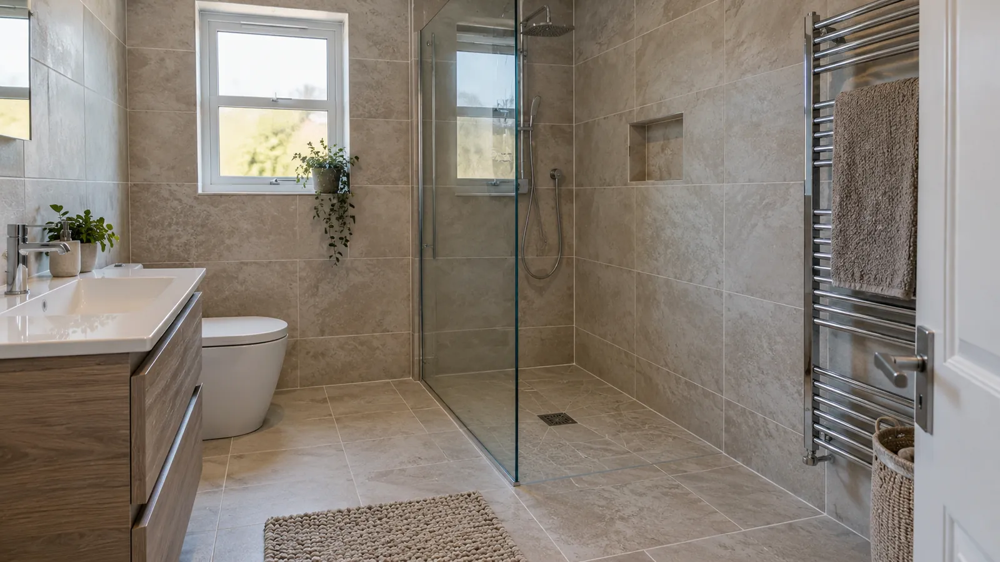

Bathroom renovation services
Bathroom Renovation Waterproofing Adelaide
Ellis Services Group coordinates bathroom renovation waterproofing and tiling in Adelaide by confirming the layout, checking the exposed substrate, agreeing the selected system and handing the work over before tiled finishes. A clear quote separates preparation, waterproofing, tiling and any related trade work.

We inspect the exposed base during bathroom renovations, complete required preparation and coordinate drainage, membrane installation and tiling. Our team plans the handover stages before new finishes cover the work.
Ellis provides a coordinated bathroom renovation waterproofing service, from assessment and preparation to membrane installation and the tiled finish. For shower repairs and other bathroom work, see bathroom waterproofing Adelaide.
Bathroom strip-out, waterproofing and retiling coordination
Ellis Services Group provides professional waterproofing for bathrooms that are in use, stripped back, under renovation or ready for tiled finishes. We assess shower areas, baths, vanities, wet locations and existing surfaces, then complete the waterproofing or repair work required.
What makes a renovation different
For renovations, we inspect the open substrate and coordinate waterproofing with the new layout, drainage and finishes. This allows preparation and membrane details to be addressed before the room is tiled.
We review shower positions, tile selections, floor levels and entry thresholds before installation, helping avoid changes to completed work and keeping the agreed stages coordinated.
The decision order in a bathroom renovation
We confirm layout, drainage, tile selections and the selected system before construction. Our team coordinates the membrane and screed sequence with the applicable compliance pathway:
- Confirm layout, fixture positions, drainage and finished levels.
- Agree plumbing rough-in and inspect the exposed substrate.
- Confirm preparation, falls and the selected membrane and screed assembly.
- Complete that assembly in its specified sequence, including junctions, corners and penetrations.
- Allow product curing and complete agreed inspection or testing.
- Release the work for tiling and grouting, with protection of the waterproofing.
- Complete flexible joints, fixtures and screens, then confirm readiness for use.
The layout and drainage decisions come first. The construction sequence then follows the design, selected system and applicable project requirements. Tiling starts after agreed readiness checks and handover.
Confirm tile choice before construction details are finalised
We check tile thickness and format alongside the tile bed, finished floor levels, shower threshold and door clearance. These details are coordinated before the screed and waterproofing work proceeds.
You can contact Ellis before choosing or buying tiles. Tell us what you have selected so far. We confirm tile size, thickness and their effect on levels and drainage with you before the screed and waterproofing details are finalised.
Coordinated bathroom waterproofing and tiling
Ellis coordinates preparation, waterproofing and tiling around the renovation layout and selected materials. Your scope sets out the work sequence and readiness checks between stages.
Who does what, and when
We inspect the exposed substrate, confirm preparation and coordinate relevant plumbing interfaces before waterproofing. Our team follows the specified screed and membrane assembly, then confirms curing and required checks before tile installation.
Ellis delivers both bathroom tiling services and waterproofing services, with a coordinated handover between membrane installation and the finished surface.
Substrate, screed falls, membrane and tile handovers
1. Layout, drainage and tile thickness
We confirm fixture and waste positions, tile thickness, finished floor levels and the entry threshold with you. If a selection changes, we review its effect on levels and drainage before proceeding.
2. Inspection of the open substrate
After removal, Ellis checks the accessible substrate and identifies preparation needed for the agreed work. We explain any additional repair or replacement, its cost and timing, and obtain written approval before carrying out extra work.
3. Curing and the selected inspection or test
We install the selected system in line with its product requirements and the project specification. Our team schedules curing and the required inspection or test according to the materials and site conditions.
Where flood testing is specified, our team confirms suitability, curing and the required records before carrying it out. We coordinate the checks for your project; do not fill a suspect wet area yourself to test it.
4. Release to the tiler
We confirm preparation, membrane details, curing and the agreed checks before installing tiled finishes. We coordinate screens, fittings and later surface work to protect the completed waterproofing and detail any penetrations.
Ellis confirms the applicable project requirements and selected membrane system before installation. We coordinate membrane position, screed falls and the tile finish as part of the agreed renovation scope.
Send your bathroom stage and planned layout to Ellis so our team can confirm the preparation, waterproofing and tiling scope.
Itemised bathroom renovation waterproofing scope
Your itemised quote sets out preparation, installation, materials and timing, including any separately priced items. Extra substrate repairs are assessed and agreed in writing before they proceed.
| Stage | What to clarify |
|---|---|
| Removal and protection | Tiles, bedding and fittings to remove; waste disposal; protection of adjoining rooms and common areas. |
| Substrate and drainage | Known preparation and falls; concealed damage awaiting inspection; plumbing changes and who completes them. |
| Waterproofing | Areas, selected system, junctions and penetrations; curing and agreed inspection or testing; records supplied. |
| Tiling | Owner or contractor tile supply, size and thickness, laying, grout, flexible joints and edge finishes. |
| Reinstatement and trades | Fixture and screen supply or refitting, plumbing and electrical coordination, cleaning and return-to-use instructions. |
Local surface repair or full renovation?
We provide targeted seal and surface repairs as well as full waterproofing renewal with new tiles. Our team assesses joints, accessible membrane details and drainage, then identifies the affected area, required work and intended finish in your written quote.
Strata and body corporate approvals
For apartment and unit renovations, we coordinate the work around building approvals, access, lift use, parking, waste removal and permitted working hours. We review shared drainage and site restrictions when setting out your service scope.
Tell us about building access or approval requirements when you enquire. We use these details to plan the work programme with you before demolition begins.
Bathroom membrane renewal and surface preparation scope
Our written renovation scope sets out each service stage and its inclusions:
- Strip-out of the existing tiles, bed and fittings.
- Substrate inspection, and repair or replacement where it has been affected.
- Screed to falls around the waste.
- Primer to the prepared substrate.
- Junctions, corners, penetrations and drainage connections detailed for the selected system.
- Membrane installation to the specified coverage and assembly.
- Cure time as specified by the membrane manufacturer.
- Inspection or testing agreed for the selected system and project requirements.
- Documentation of what was done and what the test showed.
We identify preparation, screed work, membrane installation, required checks and exclusions in your quote, so you can see the work included before booking.
Common renovation waterproofing questions
Does waterproofing go down before or after the screed?
Ellis confirms the selected system and applicable compliance pathway before construction. We coordinate the membrane above or below the tile bed or screed as specified for the project, with drainage falls, tile thickness and curing included in the work sequence.
Can I keep the existing shower position?
We assess the existing shower position, waste and drainage falls against your new layout. Where changes are needed, we coordinate them before the screed and membrane installation.
Do I have to move out during the work?
We set out bathroom downtime for preparation, curing, required checks, tiling and finishing. We agree access arrangements and review available facilities with you, then confirm when the completed area is ready for use.
What if the existing waterproofing looks fine?
Ellis Services Group inspects the wet area, confirms which layers will be removed and explains the waterproofing renewal in the written renovation scope. If removal exposes extra substrate preparation, we obtain written approval before that work proceeds.
What happens if damage is found after strip-out?
Ellis explains the exposed condition and the additional preparation or related trade work needed, then confirms the cost and timing effect. Additional scope requires written approval before it proceeds. Keep that approval with the original quote and handover records.
Send the room and surface details
Tell us your suburb, bathroom stage and planned changes. We measure the room and inspect the accessible tiles, fixtures and substrate on site, then confirm the preparation, waterproofing and tiling scope in your written quote.
These six details make a renovation quote more accurate, and usually faster to produce:
- Rough room dimensions, and the size of the shower area.
- Which floor the bathroom is on, and whether there is a room beneath it.
- Whether the shower, bath or waste positions are staying or moving.
- Whether the tile size and thickness are decided.
- Access details — stairs, lift, parking, waste removal, any strata rules.
- Your timing, and whether anything is already booked in.
One coordinated bathroom service
Our bathroom waterproofing services cover the wet area, while our broader waterproofing services cover other exposed surfaces. We also provide bathroom tiling services for finished wall and floor surfaces.
Because both scopes sit with one provider, the handover between membrane and tile is coordinated rather than negotiated. Contact Ellis directly to arrange on-site measurement and assessment of the substrate and your bathroom requirements. Further reading is optional: browse the bathroom tiling scope, Adelaide service areas or common questions if helpful.
Book your bathroom renovation service
Send your Adelaide suburb, bathroom stage, work areas and preferred timing through our enquiry form. We will assess the project and set out the required service, scope and timing in your quote.
Contact Ellis Services Group 24/7 to arrange an on-site assessment. Our team measures the space, checks the substrate, levels and planned finish, then confirms the preparation, work scope, written quote and appointment.
Phone: 0425 170 688
Address: 63 Pirie St, Adelaide SA 5000